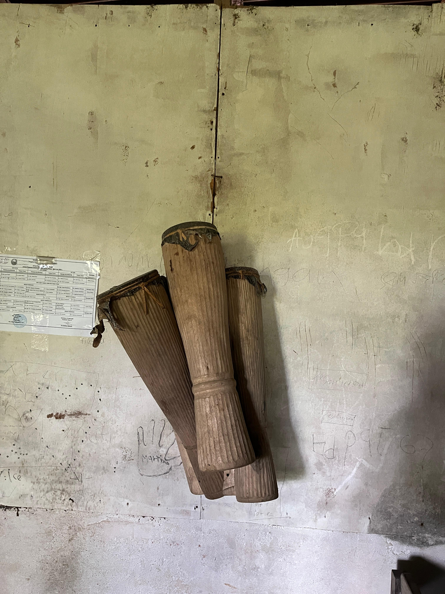
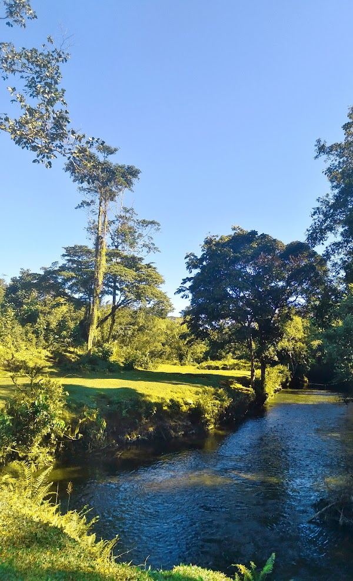
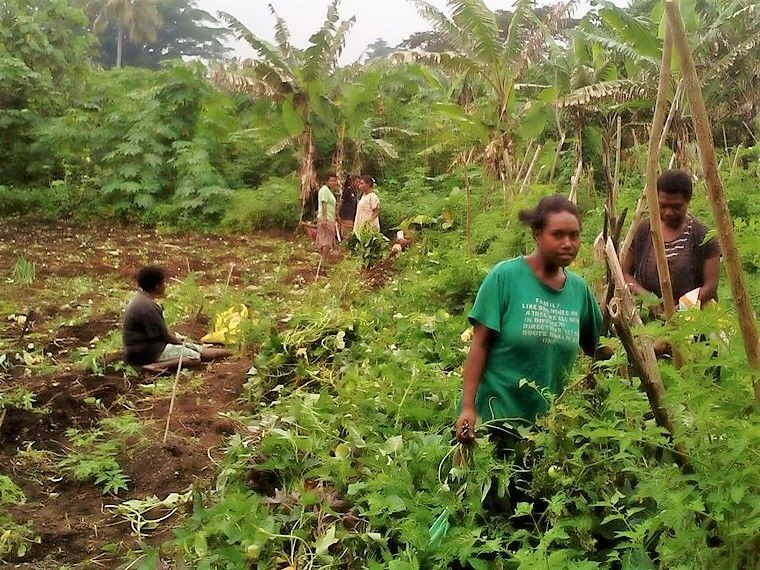

Tentang Website Ini
Website ini dibuat oleh Mahasiswa KKN untuk memperkenalkan potensi Kampung Dernafi kepada masyarakat luas melalui informasi seputar sejarah, wisata, budaya, serta dokumentasi kegiatan masyarakat.
Budaya Lokal
Di Kampung Dernafi, masyarakat masih membuat tifa secara tradisional dengan menggunakan kayu pilihan dan kulit hewan, sehingga menghasilkan bunyi khas yang menjadi bagian penting dari budaya lokal
Wisata Alam
Kali Wafor Boseren di Kampung Dernafi menyajikan panorama alam yang asri dengan aliran air yang jernih. Tempat ini bukan hanya menjadi sumber kehidupan masyarakat, tetapi juga memiliki potensi besar sebagai destinasi wisata alam untuk rekreasi, bersantai, dan menikmati keindahan alam khas Papua
Aktivitas Masyarakat
Masyarakat Kampung Dernafi dalam kesehariannya bekerja sebagai petani sekaligus menjual hasil panen mereka